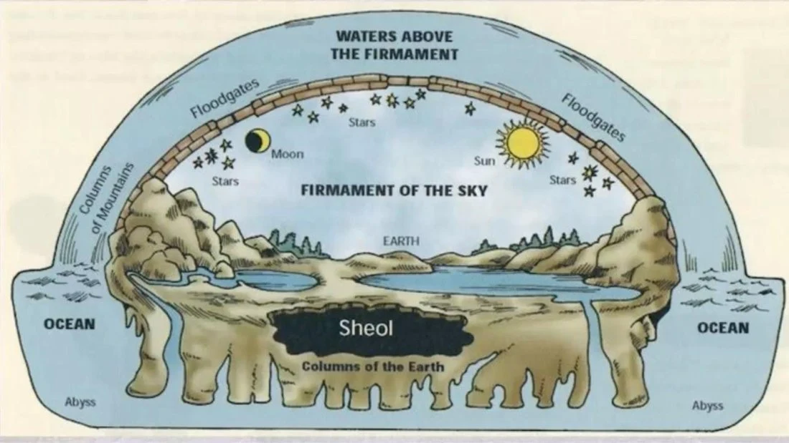
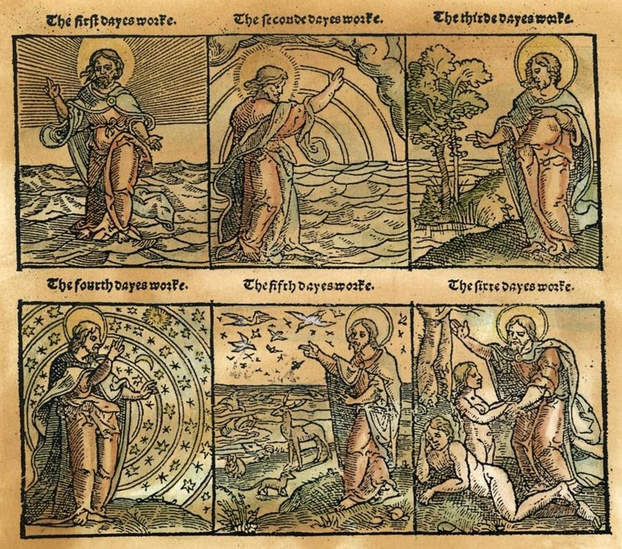
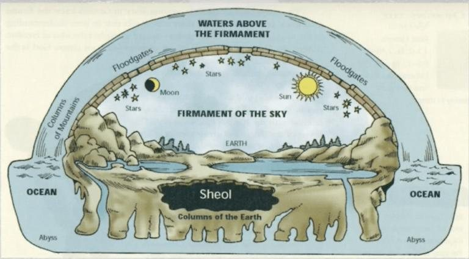
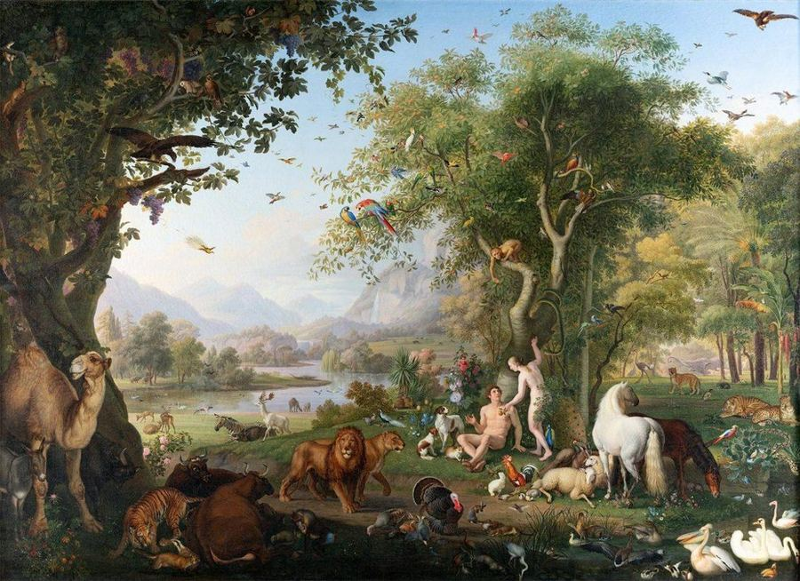
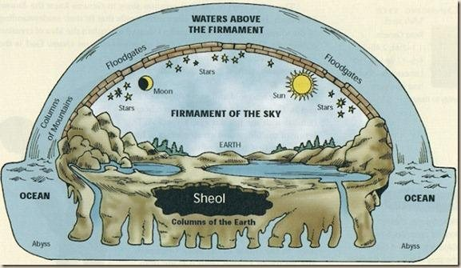
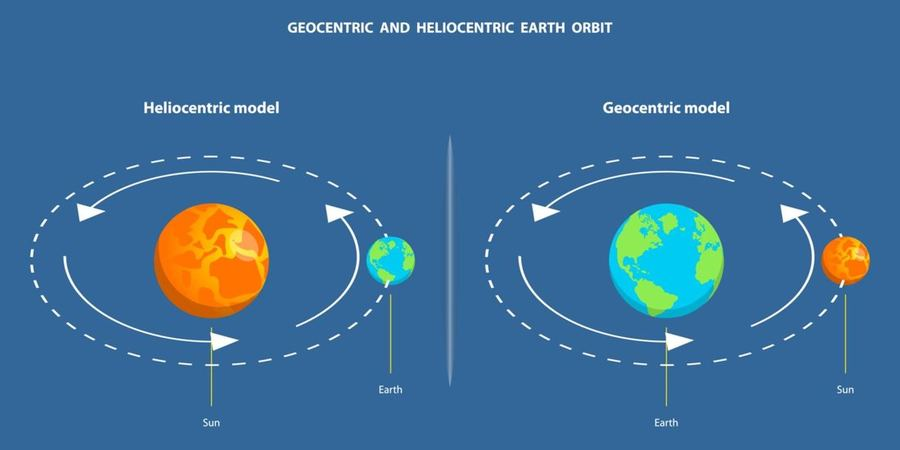
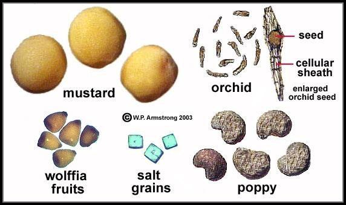
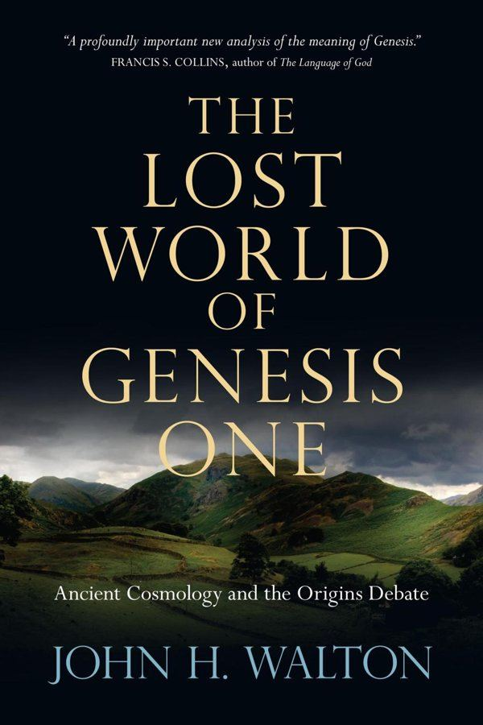
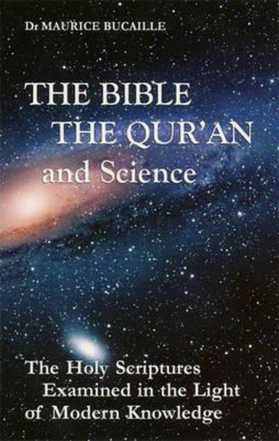

8
ভূমিকা
বাইবেল (Bible) খ্রিষ্টধর্মের প্রধান ধর্মগ্রন্থ। এটি মূলত দুটি প্রধান অংশে বিভক্ত:
- Old Testament (পুরাতন নিয়ম): ইহুদি ধর্মের ধর্মগ্রন্থ তানাখের সঙ্গে এর বড় অংশের মিল রয়েছে।
- New Testament (নতুন নিয়ম): যিশু খ্রিষ্টের জীবন, শিক্ষা, তাঁর শিষ্যদের কার্যক্রম এবং প্রাথমিক খ্রিষ্টীয় বিশ্বাস নিয়ে রচিত।
বাইবেলের বিভিন্ন অংশে পৃথিবী, আকাশ, সূর্য, চন্দ্র, নক্ষত্র, প্রাণী, উদ্ভিদ, মানবজাতির উৎপত্তি, বন্যা, মহাবিশ্বের সৃষ্টি এবং প্রকৃতির বিভিন্ন বিষয় নিয়ে আলোচনা রয়েছে।
এখন প্রশ্ন হলো: বাইবেলের এসব বক্তব্য আধুনিক বিজ্ঞানের সঙ্গে কতটা সামঞ্জস্যপূর্ণ?
এই আলোচনায় আমরা বাইবেলের নির্দিষ্ট অধ্যায় ও পদ উল্লেখ করে সেগুলো আধুনিক বৈজ্ঞানিক জ্ঞানের সঙ্গে তুলনা করব।
একটি গুরুত্বপূর্ণ পদ্ধতিগত সতর্কতা: বাইবেলের প্রতিটি অস্বাভাবিক বা প্রাচীন ভাষার বক্তব্যকে সরাসরি বৈজ্ঞানিক ভুল বলা যাবে না। কিছু বক্তব্য রূপক, কবিতা, ধর্মতাত্ত্বিক ভাষা কিংবা প্রাচীন মানুষের বিশ্বদৃষ্টির প্রকাশ। তাই প্রতিটি ক্ষেত্রে তিনটি বিষয় আলাদা করব:
- বাইবেলের মূল বক্তব্য কী?
- আধুনিক বিজ্ঞান কী বলে?
- বক্তব্যটি প্রকৃত বৈজ্ঞানিক বিরোধ, নাকি ব্যাখ্যাগত বিতর্ক?
আরেকটি বিষয়: প্রোটেস্ট্যান্ট, ক্যাথলিক ও অর্থোডক্স বাইবেলের বইয়ের সংখ্যা এক নয়। ফলে সব সংস্করণের প্রতিটি সম্ভাব্য বিতর্কিত বক্তব্যের একটি চূড়ান্ত সংখ্যা দেওয়া সম্ভব নয়।
১. প্রথম বৈজ্ঞানিক সমস্যা: আকাশের ওপরে পানি থাকার ধারণা

jesuswithoutbaggage.wordpress.com
বাইবেলের রেফারেন্স: আদিপুস্তক (Genesis) ১:৬–৮
বাইবেলে বলা হয়েছে:
“পরে ঈশ্বর বললেন, জলের মধ্যে এক বিস্তৃতি হোক, আর তা জল থেকে জলকে পৃথক করুক।”
এরপর ঈশ্বর সেই বিস্তৃতির নাম রাখেন আকাশ।
Genesis 1:7 অনুযায়ী, ঈশ্বর আকাশের নিচের পানি এবং আকাশের ওপরের পানিকে পৃথক করেন।
সমস্যাটি কোথায়?
এই বর্ণনায় পৃথিবীর ওপরের আকাশকে এমন একটি বিভাজনকারী বিস্তৃতি হিসেবে দেখানো হয়েছে, যার ওপরেও পানি রয়েছে।
প্রাচীন নিকটপ্রাচ্যের বিশ্বদৃষ্টিতে আকাশকে অনেক সময় একটি শক্ত গম্বুজ বা Firmament হিসেবে কল্পনা করা হতো।
কিন্তু আধুনিক জ্যোতির্বিজ্ঞান ও বায়ুমণ্ডলবিজ্ঞানে:
- পৃথিবীর বায়ুমণ্ডল কোনো কঠিন গম্বুজ নয়।
- মহাকাশের ওপরে কোনো বিশাল জলাধার নেই, যা আকাশের কঠিন ছাদ দ্বারা আটকে রাখা হয়েছে।
- মেঘের পানি বাষ্পীভবন, ঘনীভবন ও বৃষ্টিপাতের মাধ্যমে জলচক্রের অংশ হিসেবে কাজ করে।
বৈজ্ঞানিক মূল্যায়ন: আক্ষরিক অর্থে আকাশের ওপর বিশাল জলরাশি থাকার ধারণা আধুনিক বিজ্ঞানের সঙ্গে মেলে না। তবে কিছু খ্রিষ্টীয় ব্যাখ্যাকারী বলেন, এখানে আকাশের দৃশ্যমান মেঘ বা বায়ুমণ্ডলীয় পানির কথা বলা হয়েছে।
তথ্যসূত্র: St Andrews Encyclopaedia of Theology – Biblical Criticism and Modern Science।
২. সূর্যের আগে উদ্ভিদ সৃষ্টি
বাইবেলের রেফারেন্স: Genesis 1:11–19
Genesis-এর সৃষ্টি বিবরণ অনুযায়ী:
- তৃতীয় দিনে ঘাস, উদ্ভিদ ও ফলদায়ক গাছ সৃষ্টি হয়।
- চতুর্থ দিনে সূর্য, চন্দ্র ও নক্ষত্র সৃষ্টি হয়।
অর্থাৎ বাইবেলের বর্ণিত ক্রম অনুযায়ী সূর্য সৃষ্টির আগেই উদ্ভিদ সৃষ্টি হয়েছে।
বৈজ্ঞানিক সমস্যা:
অধিকাংশ সবুজ উদ্ভিদ সালোকসংশ্লেষণের জন্য আলোর শক্তি ব্যবহার করে।
সালোকসংশ্লেষণ:
6CO2 + 6H2O C6H12O6 + 6O2
সূর্যের আলো পৃথিবীর অধিকাংশ উদ্ভিদের শক্তির প্রধান উৎস।
তাহলে প্রশ্ন:
- সূর্য সৃষ্টির আগে উদ্ভিদ কীভাবে স্বাভাবিকভাবে বেড়ে উঠল?
- সূর্য ছাড়া উদ্ভিদের দীর্ঘমেয়াদি জীবনধারণ কীভাবে সম্ভব হলো?
বৈজ্ঞানিক মূল্যায়ন: Genesis-এর আক্ষরিক কালানুক্রমিক পাঠের সঙ্গে পৃথিবীতে উদ্ভিদের বিবর্তন ও সৌরজগতের ইতিহাসের অসামঞ্জস্য রয়েছে।
খ্রিষ্টীয় আক্ষরিক ব্যাখ্যাকারীরা বলেন, প্রথম দিনে আলোর উৎস সৃষ্টি হয়েছিল, তাই সূর্য ছাড়াও উদ্ভিদ আলো পেতে পারে। কিন্তু এটি আক্ষরিক পাঠের একটি ধর্মতাত্ত্বিক ব্যাখ্যা, আধুনিক উদ্ভিদবিজ্ঞানের আবিষ্কার নয়।
রেফারেন্স: A Fresh Look at Two Genesis Creation Accounts।
৩. পৃথিবী সৃষ্টির ক্রম নিয়ে Genesis-এর দুটি বিবরণের পার্থক্য

রেফারেন্স: Genesis 1:11–27 এবং Genesis 2:5–22
Genesis-এর প্রথম অধ্যায়ে সৃষ্টির একটি ধারাবাহিক বিবরণ দেওয়া হয়েছে। দ্বিতীয় অধ্যায়ে আদম, হাওয়া এবং এডেন উদ্যানের আরও একটি বিবরণ রয়েছে।
প্রথম অধ্যায়ের ক্রম:
- উদ্ভিদ।
- জলজ প্রাণী ও পাখি।
- স্থলজ প্রাণী।
- মানুষ—পুরুষ ও নারী।
দ্বিতীয় অধ্যায়ের বর্ণনায়:
- মাঠের উদ্ভিদ ও শস্যজাতীয় গাছের প্রসঙ্গ এসেছে।
- আদমকে মাটি থেকে সৃষ্টি করা হয়েছে।
- পরে এডেন উদ্যানের গাছপালার বিবরণ এসেছে।
- প্রাণীদের আদমের কাছে আনা হয়েছে।
- সবশেষে হাওয়াকে সৃষ্টি করা হয়েছে।
সমস্যাটি কোথায়?
Genesis 1-এ মানুষ সৃষ্টির আগে স্থলজ প্রাণী সৃষ্টি হয়েছে।
কিন্তু Genesis 2-এর আক্ষরিক ও ধারাবাহিক পাঠে আদমের সৃষ্টি এবং প্রাণীদের তার কাছে আনার ক্রমকে ভিন্নভাবে বোঝা যেতে পারে।
এখানে দুটি সৃষ্টি-বিবরণের ক্রম ও উপস্থাপনা নিয়ে ব্যাখ্যাগত সমস্যা রয়েছে।
বৈজ্ঞানিক মূল্যায়ন: এটিকে সরাসরি জীববিজ্ঞানের ভুল বলা অপেক্ষা দুটি বিবরণের সাহিত্যিক ও কালানুক্রমিক পার্থক্য বলা বেশি যথাযথ। আধুনিক বাইবেল গবেষণায় Genesis 1 ও Genesis 2-কে পৃথক সাহিত্যিক সৃষ্টি-বিবরণ হিসেবে বিশ্লেষণ করা হয়।
রেফারেন্স: National Center for Science Education – Genesis Knows Nothing of Scientific Creationism।
৪. পৃথিবী কি সমতল বা স্তম্ভের ওপর দাঁড়িয়ে আছে?

বাইবেলে পৃথিবীর ভিত্তি ও স্তম্ভ নিয়ে একাধিক বক্তব্য রয়েছে।
- ১ শমূয়েল ২:৮
“পৃথিবীর স্তম্ভসমূহ সদাপ্রভুর, আর তিনি তাদের ওপর জগৎ স্থাপন করেছেন।”
- গীতসংহিতা ৭৫:৩
এখানে পৃথিবীর স্তম্ভসমূহ কেঁপে ওঠার কথা বলা হয়েছে।
- ইয়োব ৯:৬
এখানে পৃথিবীকে তার স্থান থেকে নাড়িয়ে দেওয়া এবং তার স্তম্ভগুলো কাঁপানোর কথা রয়েছে।
বৈজ্ঞানিক সমস্যা:
আধুনিক ভূবিজ্ঞান অনুযায়ী:
- পৃথিবী কোনো দৃশ্যমান স্তম্ভের ওপর দাঁড়িয়ে নেই।
- পৃথিবী একটি প্রায় গোলাকার গ্রহ।
- পৃথিবীর অভ্যন্তরে ভূত্বক, ম্যান্টল ও কেন্দ্র রয়েছে।
- পৃথিবীর অবস্থান ও গঠন মহাকর্ষ এবং অন্যান্য ভৌত প্রক্রিয়ার মাধ্যমে ব্যাখ্যা করা হয়।
বৈজ্ঞানিক মূল্যায়ন: পৃথিবীর আক্ষরিক স্তম্ভ থাকার ধারণা বৈজ্ঞানিক নয়। তবে কবিতার ভাষায় স্তম্ভ বলতে পৃথিবীর স্থায়িত্ব বা ভিত্তি বোঝানো হতে পারে। সুতরাং এই পদগুলোকে সরাসরি বৈজ্ঞানিক দাবি হিসেবে ব্যবহার করা বিতর্কিত।
রেফারেন্স: Bible.org – Psalm 104।
৫. পৃথিবীর সব পর্বত কি একসময় পানির নিচে ছিল?
বাইবেলের রেফারেন্স: Genesis 7:19–20
Genesis-এ নূহের মহাপ্লাবনের বর্ণনায় বলা হয়েছে:
“পৃথিবীর ওপর সমস্ত উচ্চ পর্বত জলমগ্ন হলো।”
এরপর বলা হয়েছে, পানির উচ্চতা পর্বতগুলোর চেয়ে ১৫ হাত বেশি ছিল।
এটি আক্ষরিকভাবে পড়লে পৃথিবীর সব উঁচু পর্বতও পানির নিচে চলে গিয়েছিল।
বৈজ্ঞানিক সমস্যা:
আধুনিক ভূতত্ত্ব অনুযায়ী:
- পৃথিবীর পর্বত, মহাদেশ ও সমুদ্রের ইতিহাস দীর্ঘ ভূতাত্ত্বিক সময়ের সঙ্গে সম্পর্কিত।
- পৃথিবীর সব পর্বত একই সময়ে পানিতে ডুবে যাওয়ার মতো বৈশ্বিক বন্যার পক্ষে গ্রহণযোগ্য ভূতাত্ত্বিক প্রমাণ নেই।
- পৃথিবীর ভূতাত্ত্বিক স্তর, জীবাশ্মের বিন্যাস এবং বরফস্তরের রেকর্ড একটি সাম্প্রতিক বৈশ্বিক বন্যার ধারণাকে সমর্থন করে না।
বৈজ্ঞানিক মূল্যায়ন: নূহের প্লাবনকে যদি সমগ্র পৃথিবীর সব পর্বত ঢেকে দেওয়া একটি সাম্প্রতিক ঐতিহাসিক ঘটনা হিসেবে ধরা হয়, তাহলে তা আধুনিক ভূবিজ্ঞানের সঙ্গে সাংঘর্ষিক।
কিছু খ্রিষ্টীয় ব্যাখ্যাকারী বলেন, বন্যাটি একটি নির্দিষ্ট অঞ্চলে ঘটেছিল, সমগ্র পৃথিবীতে নয়। সেক্ষেত্রে এটি বৈশ্বিক বন্যার দাবি থাকে না।
৬. খরগোশ কি জাবর কাটে?
বাইবেলের রেফারেন্স: Leviticus 11:6
বাইবেলের এই পদে খরগোশ সম্পর্কে বলা হয়েছে যে সে জাবর কাটে, কিন্তু তার পা বিভক্ত খুরবিশিষ্ট নয়।
বৈজ্ঞানিক সমস্যা:
জাবর কাটা (Ruminating) বলতে বোঝায় খাদ্য পাকস্থলী থেকে আবার মুখে ফিরিয়ে এনে পুনরায় চিবানো। গরু, ছাগল, ভেড়া ইত্যাদি প্রাণী এভাবে খাদ্য হজম করে।
খরগোশ প্রকৃত অর্থে জাবরকাটা প্রাণী নয়। তার পরিপাকতন্ত্রে Cecotrophy নামের একটি প্রক্রিয়া রয়েছে। এতে বিশেষ ধরনের নরম মল পুনরায় খেয়ে পুষ্টি গ্রহণ করে।
এটি গরুর জাবর কাটার প্রক্রিয়ার সমান নয়।
বৈজ্ঞানিক মূল্যায়ন: আধুনিক প্রাণিবিজ্ঞানের সংজ্ঞা অনুযায়ী খরগোশ জাবরকাটা প্রাণী নয়। তবে প্রাচীন হিব্রু ভাষায় প্রাণীদের খাদ্য চিবানোর দৃশ্যমান আচরণকে কীভাবে শ্রেণিবদ্ধ করা হয়েছিল, সেটিও বিবেচনা করা দরকার।
এমনকি কিছু খ্রিষ্টীয় গবেষকও এই বিষয়টি নিয়ে আলোচনা করেছেন।
সূত্র: Geoscience Research Institute – Do Rabbits Chew the Cud?।
৭. বাদুড়কে পাখির শ্রেণিতে রাখা হয়েছে কেন?
বাইবেলের রেফারেন্স: Leviticus 11:13–19 এবং Deuteronomy 14:11–18
এই অংশগুলোতে বিভিন্ন উড়ন্ত প্রাণীর তালিকায় বাদুড়ের নাম রয়েছে।
বৈজ্ঞানিক সমস্যা:
আধুনিক জীববিজ্ঞান অনুযায়ী:
- পাখি হলো Aves শ্রেণির প্রাণী।
- বাদুড় হলো Mammalia শ্রেণির প্রাণী।
- বাদুড় স্তন্যপায়ী।
- বাদুড় বাচ্চা প্রসব করে এবং দুধ পান করায়।
তাহলে বাদুড়কে পাখির তালিকায় রাখা হলো কেন?
বৈজ্ঞানিক মূল্যায়ন: আধুনিক প্রাণিবিজ্ঞানের শ্রেণিবিন্যাস অনুযায়ী বাদুড় পাখি নয়। তবে প্রাচীন হিব্রু শ্রেণিবিন্যাস আধুনিক বৈজ্ঞানিক Taxonomy অনুসরণ করত না। সেখানে উড়তে পারে এমন প্রাণীদের একটি ব্যবহারিক শ্রেণিতে রাখা হয়ে থাকতে পারে।
তাই এটিকে আধুনিক প্রাণিবিজ্ঞানের সঙ্গে শ্রেণিবিন্যাসগত পার্থক্য বলা যথাযথ; অবশ্যই এটিকে লেখকের অজ্ঞতার চূড়ান্ত প্রমাণ বলা যায় না।
সূত্র: United Bible Societies – Leviticus 11 Translation Commentary।
৮. সূর্য কি পৃথিবীর চারপাশে ঘোরে, নাকি পৃথিবী সূর্যের চারপাশে ঘোরে?

বাইবেলের রেফারেন্স: Joshua 10:12–13
এই অংশে যিহোশূয় সূর্যকে থেমে যেতে বলেন।
বর্ণনায় বলা হয়েছে, সূর্য আকাশের মাঝখানে থেমে গিয়েছিল এবং প্রায় এক দিন অস্ত যায়নি।
বৈজ্ঞানিক প্রশ্ন:
পৃথিবীতে দিন-রাতের পরিবর্তন ঘটে পৃথিবীর নিজ অক্ষে আবর্তনের কারণে।
সূর্য পৃথিবীর চারদিকে ঘোরে না। বরং পৃথিবী সূর্যকে কেন্দ্র করে পরিভ্রমণ করে।
যদি এই ঘটনাকে পৃথিবীর আবর্তন থেমে যাওয়া হিসেবে আক্ষরিকভাবে ব্যাখ্যা করা হয়, তাহলে:
- পৃথিবীর ঘূর্ণনগতিতে বিশাল পরিবর্তন ঘটবে।
- পৃথিবীর বায়ুমণ্ডল ও সমুদ্রের ওপর বিপুল জড়তাজনিত প্রভাব পড়বে।
- এমন একটি ঘটনা ঘটলে তার ব্যাপক ভৌত ও ভূতাত্ত্বিক প্রমাণ প্রত্যাশিত হবে।
বৈজ্ঞানিক মূল্যায়ন: সূর্যকে থামানোর ঘটনাটি যদি পৃথিবীর আবর্তন বন্ধ হওয়ার অর্থে নেওয়া হয়, তাহলে তা স্বাভাবিক জ্যোতির্বিজ্ঞানের সঙ্গে সাংঘর্ষিক। তবে বাইবেলের এই ঘটনাকে অলৌকিক ঘটনা বা কাব্যিক ভাষা হিসেবে ব্যাখ্যা করেন অনেক খ্রিষ্টীয় ধর্মতাত্ত্বিক। তাই শুধু সূর্য থেমে যাওয়ার ভাষা ব্যবহার করাকে বৈজ্ঞানিক ভুল বলা যায় না।
রেফারেন্স: NET Bible – Joshua 10:12–14।
৯. নক্ষত্র কি পৃথিবীতে পড়ে যেতে পারে?
বাইবেলের রেফারেন্স: Matthew 24:29 এবং Revelation 6:13
Matthew 24:29-এ বলা হয়েছে, আকাশ থেকে নক্ষত্রগুলো পতিত হবে।
Revelation 6:13-এ বলা হয়েছে, আকাশের নক্ষত্রগুলো পৃথিবীতে পতিত হচ্ছে, যেমন ডুমুরগাছ থেকে ডুমুর ঝরে পড়ে।
বৈজ্ঞানিক সমস্যা:
আধুনিক জ্যোতির্বিজ্ঞান অনুযায়ী:
- নক্ষত্র হলো সূর্যের মতো বিশাল গ্যাসীয় জ্যোতিষ্ক।
- পৃথিবী থেকে নিকটতম নক্ষত্র সূর্য।
- সূর্য পৃথিবীর তুলনায় প্রায় ১০৯ গুণ ব্যাসবিশিষ্ট।
- অধিকাংশ নক্ষত্র পৃথিবী থেকে অত্যন্ত দূরে অবস্থিত।
যদি একটি প্রকৃত নক্ষত্র পৃথিবীতে পতিত হয়, তাহলে পৃথিবীসহ সৌরজগতের জন্য তা বিপর্যয়কর হবে।
এখানে একটি গুরুত্বপূর্ণ পার্থক্য রয়েছে:
উল্কা (Meteor) আকাশে দেখা যায় এবং ছোট মহাজাগতিক বস্তু বায়ুমণ্ডলে প্রবেশ করলে আলোর রেখা তৈরি হয়। কিন্তু উল্কা এবং নক্ষত্র এক জিনিস নয়।
বৈজ্ঞানিক মূল্যায়ন: নক্ষত্রকে আক্ষরিক অর্থে পৃথিবীতে পতিত হওয়া বস্তু হিসেবে ধরলে তা জ্যোতির্বিজ্ঞানের সঙ্গে মেলে না। তবে Revelation একটি প্রতীকী ও প্রলয়সংক্রান্ত সাহিত্যিক গ্রন্থ; এখানে নক্ষত্রের পতনকে প্রতীকী ভাষা হিসেবে ব্যাখ্যা করা হয়।
১০. যাকোবের পদ্ধতিতে প্রাণীর গায়ের রং পরিবর্তন
বাইবেলের রেফারেন্স: Genesis 30:37–43
এখানে যাকোবের পশুপাল বৃদ্ধির একটি ঘটনা বর্ণনা করা হয়েছে।
যাকোব বিভিন্ন গাছের ডাল ছুলে সেগুলো পশুদের পানির পাত্রের সামনে রাখতেন। এরপর পশুগুলো যখন প্রজনন করত, তখন ডোরাকাটা, ছোপযুক্ত ও বিচিত্র রঙের বাচ্চা জন্মাত।
বৈজ্ঞানিক সমস্যা:
আধুনিক জেনেটিকস অনুযায়ী:
- প্রাণীর গায়ের রং প্রধানত জিন দ্বারা নিয়ন্ত্রিত হয়।
- প্রজননের সময় বাবা-মায়ের জিনগত বৈশিষ্ট্য সন্তানের মধ্যে সঞ্চারিত হয়।
- সামনে রঙিন বা ছুলে রাখা ডাল রাখলেই প্রাণীর বাচ্চার গায়ে সেই ধরনের দাগ তৈরি হয় না।
বৈজ্ঞানিক মূল্যায়ন: যদি ডাল রাখার পদ্ধতিটিকে স্বাভাবিক জৈবিক কারণ হিসেবে ধরা হয়, তাহলে এটি প্রতিষ্ঠিত জেনেটিকসের সঙ্গে সামঞ্জস্যপূর্ণ নয়।
তবে বাইবেলের বর্ণনায় পরবর্তী Genesis 31:9–12-এ যাকোব তার পশুপালের বৃদ্ধিকে ঈশ্বরের হস্তক্ষেপের ফল হিসেবে ব্যাখ্যা করেন। তাই খ্রিষ্টীয় ব্যাখ্যাকারীরা ঘটনাটিকে অলৌকিক ঘটনা হিসেবেও দেখেন।
সূত্র: Jewish Bible Quarterly – Jacob and the Spotted Sheep।
১১. মানুষের সর্বোচ্চ আয়ু কি ১২০ বছর?
বাইবেলের রেফারেন্স: Genesis 6:3
এখানে ঈশ্বরের বক্তব্য হিসেবে বলা হয়েছে:
“তার আয়ু একশ বিশ বছর হবে।”
এটিকে যদি মানুষের সর্বোচ্চ স্বাভাবিক আয়ু হিসেবে ব্যাখ্যা করা হয়, তাহলে প্রশ্ন আসে:
মানুষ কি ১২০ বছরের বেশি বাঁচতে পারে?
বৈজ্ঞানিক তথ্য:
আধুনিক সময়ে মানুষের যাচাইকৃত সর্বোচ্চ আয়ুর রেকর্ড ১২২ বছর ১৬৪ দিন। ফরাসি নারী Jeanne Calment এই রেকর্ডের অধিকারী।
তাই মানুষ ১২০ বছরের বেশি বাঁচতে পারে।
বৈজ্ঞানিক মূল্যায়ন: Genesis 6:3-কে মানুষের সর্বোচ্চ আয়ুর কঠোর সীমা হিসেবে নিলে তা ভুল। কিন্তু ইহুদি ব্যাখ্যার একটি গুরুত্বপূর্ণ ধারা অনুযায়ী, এখানে মহাপ্লাবনের আগে মানুষকে অনুতাপের জন্য দেওয়া ১২০ বছরের সময়সীমার কথা বলা হয়েছে। এই ব্যাখ্যা অনুযায়ী এটি মানুষের সর্বোচ্চ আয়ুর ঘোষণা নয়।
সূত্র: Chabad – Can We Live More Than 120 Years?।
১২. সরিষার বীজ কি পৃথিবীর সবচেয়ে ছোট বীজ?

বাইবেলের রেফারেন্স: Matthew 13:31–32 এবং Mark 4:30–32
Matthew 13:32-এ সরিষার বীজকে সব বীজের মধ্যে সবচেয়ে ছোট বলা হয়েছে।
বৈজ্ঞানিক সমস্যা:
পৃথিবীতে সরিষার চেয়েও ছোট বীজ রয়েছে।
উদাহরণ:
- Orchid বা অর্কিডের কিছু প্রজাতির বীজ অত্যন্ত ক্ষুদ্র।
- অনেক অর্কিডের বীজ ধুলোর মতো ছোট।
- সরিষার বীজ পৃথিবীর ক্ষুদ্রতম বীজ নয়।
অন্যদিকে বাইবেলে সরিষাগাছ বড় হয়ে গাছের মতো হওয়ার কথা বলা হয়েছে।
আধুনিক উদ্ভিদবিজ্ঞানে সাধারণ সরিষাগাছ একটি ভেষজ উদ্ভিদ বা ঝোপজাতীয় উদ্ভিদ, প্রকৃত কাঠের গাছ নয়।
বৈজ্ঞানিক মূল্যায়ন: পৃথিবীর সব বীজের মধ্যে সরিষার বীজ সবচেয়ে ছোট—এটি আক্ষরিকভাবে সঠিক নয়। তবে এটি একটি দৃষ্টান্তমূলক উপমা বা প্রচলিত কথ্য অভিব্যক্তি হতে পারে। যিশু এখানে উদ্ভিদবিজ্ঞানের পাঠ দিচ্ছিলেন না; ক্ষুদ্র থেকে বৃহৎ হওয়ার উপমা দিচ্ছিলেন।
সূত্র: IVP New Testament Commentary – The Kingdom Is Like a Mustard Seed।
১৩. পৃথিবী কি কখনো নড়ে না?
বাইবেলের রেফারেন্স: Psalm 104:5 এবং Ecclesiastes 1:4
Psalm 104:5-এ বলা হয়েছে, ঈশ্বর পৃথিবীকে তার ভিত্তির ওপর স্থাপন করেছেন, যাতে তা কখনো নড়ে না যায়।
Ecclesiastes 1:4-এ বলা হয়েছে, পৃথিবী চিরকাল স্থায়ী থাকে।
বৈজ্ঞানিক সমস্যা:
আধুনিক ভূবিজ্ঞান অনুযায়ী পৃথিবী স্থির নয়।
- পৃথিবী নিজ অক্ষে আবর্তন করে।
- পৃথিবী সূর্যের চারদিকে পরিভ্রমণ করে।
- পৃথিবীর টেকটোনিক প্লেট চলমান।
- ভূমিকম্পের সময় ভূত্বকের অবস্থান পরিবর্তিত হয়।
মূল্যায়ন: এই বক্তব্যগুলোকে আক্ষরিক ভৌত স্থিরতার দাবি হিসেবে নিলে তা ভুল। তবে বাইবেলের কবিতায় পৃথিবীর স্থায়িত্ব ও স্থিতিশীলতা বোঝানো হয়ে থাকতে পারে।
১৪. সূর্য কি পৃথিবীর চারপাশে ঘোরে?
বাইবেলের রেফারেন্স: Ecclesiastes 1:5
এখানে বলা হয়েছে:
“সূর্য উদিত হয় এবং সূর্য অস্ত যায়, তারপর সে তার উদয়ের স্থানে ফিরে যাওয়ার জন্য তাড়াতাড়ি করে।”
আধুনিক বিজ্ঞানে সূর্যের উদয় ও অস্ত যাওয়া পৃথিবীর আবর্তনের কারণে ঘটে।
তবে এখানে একটি গুরুত্বপূর্ণ বিষয় রয়েছে: আজও আমরা বলি সূর্য উঠেছে, সূর্য ডুবেছে। এটি পর্যবেক্ষকের অবস্থান থেকে বলা স্বাভাবিক ভাষা। তাই এই পদকে বৈজ্ঞানিক ভুল বলা যথাযথ হবে না।
১৫. বাইবেলের আরও কিছু বিতর্কিত বৈজ্ঞানিক ও ঐতিহাসিক বক্তব্য
নিচের বিষয়গুলোও গবেষণায় আলোচিত হয়। এগুলোর সবগুলোকে প্রতিষ্ঠিত বৈজ্ঞানিক ভুল বলা যাবে না।
| বিষয় | বাইবেলের রেফারেন্স | আলোচনার বিষয় |
|---|---|---|
| মহাপ্লাবনে সব প্রাণীর ধ্বংস | Genesis 7:21–23 | জীববৈচিত্র্য ও ভূতাত্ত্বিক রেকর্ড |
| নূহের নৌকায় সব প্রাণী | Genesis 6:19–20 | প্রাণীর সংখ্যা, আবাসস্থল ও খাদ্য |
| মানুষের উৎপত্তি | Genesis 2:7 | আধুনিক বিবর্তন ও মানব উৎপত্তি |
| পৃথিবীর বয়স | Genesis 5, 11 | আক্ষরিক কালপঞ্জি বনাম ভূতাত্ত্বিক বয়স |
| আকাশের জানালা | Genesis 7:11 | প্রাচীন মহাজাগতিক ধারণা |
| সমুদ্রের নিচের উৎস | Genesis 7:11 | প্রাচীন জলতত্ত্ব ও বন্যার বর্ণনা |
| মৃতদের পুনরুত্থান | 1 Corinthians 15 | জীববিজ্ঞান ও অলৌকিকতার প্রশ্ন |
এখানে শেষের বিষয়গুলোকে সাধারণ বৈজ্ঞানিক ভুলের তালিকায় ফেলা ঠিক হবে না। বিশেষ করে অলৌকিক ঘটনা বিজ্ঞান দিয়ে সরাসরি প্রমাণ বা অপ্রমাণ করার বিষয় নয়।
১৬. কোনগুলো তুলনামূলকভাবে শক্তিশালী বৈজ্ঞানিক আপত্তি?
গবেষণার সুবিধার জন্য বিষয়গুলোকে তিন ভাগে ভাগ করা যায়।
শক্তিশালী আপত্তি
- আকাশের ওপরে জলরাশি — Genesis 1:6–8
আক্ষরিক প্রাচীন মহাজাগতিক ধারণা আধুনিক জ্যোতির্বিজ্ঞানের সঙ্গে মেলে না।
শক্তিশালী আপত্তি
- উদ্ভিদের আগে সূর্য সৃষ্টি না হওয়া — Genesis 1:11–19
আক্ষরিক সৃষ্টিক্রম আধুনিক সৌরজগত ও জীববিজ্ঞানের ইতিহাসের সঙ্গে মেলে না।
শক্তিশালী আপত্তি
- পৃথিবীব্যাপী মহাপ্লাবন — Genesis 7:19–23
সাম্প্রতিক সময়ে সব পর্বত ডুবিয়ে দেওয়া বৈশ্বিক বন্যার পক্ষে ভূতাত্ত্বিক প্রমাণ নেই।
ব্যাখ্যাগত বিতর্ক
- খরগোশের জাবর কাটা — Leviticus 11:6
আধুনিক প্রাণিবিজ্ঞানের সংজ্ঞার সঙ্গে প্রাচীন শ্রেণিবিন্যাসের পার্থক্য রয়েছে।
ব্যাখ্যাগত বিতর্ক
- নক্ষত্রের পতন — Matthew 24:29
আক্ষরিক পাঠে জ্যোতির্বৈজ্ঞানিক সমস্যা, কিন্তু প্রলয়সংক্রান্ত প্রতীকী ভাষা হওয়ার সম্ভাবনা রয়েছে।
ব্যাখ্যাগত বিতর্ক
- সূর্য থেমে যাওয়া — Joshua 10:12–13
অলৌকিক ঘটনা, কাব্যিক ভাষা অথবা আক্ষরিক জ্যোতির্বৈজ্ঞানিক ঘটনা—ব্যাখ্যা নিয়ে বিতর্ক রয়েছে।
১৭. গবেষণার জন্য গুরুত্বপূর্ণ বই ও উৎস
বাইবেলের বৈজ্ঞানিক বক্তব্য নিয়ে নির্ভরযোগ্য আলোচনা করতে শুধু নাস্তিকদের লেখা বা শুধু খ্রিষ্টীয় প্রতিরক্ষামূলক বই পড়লে হবে না। দুই পক্ষের গবেষণা এবং স্বাধীন একাডেমিক গবেষণা পড়া উচিত।
- The Bible Unearthed
লেখক: Israel Finkelstein ও Neil Asher Silberman।
বাইবেলের ঐতিহাসিক বর্ণনা ও প্রত্নতাত্ত্বিক প্রমাণ নিয়ে গবেষণা।

- The Lost World of Genesis One
লেখক: John H. Walton।
Genesis-এর সৃষ্টি বিবরণ এবং প্রাচীন নিকটপ্রাচ্যের বিশ্বদৃষ্টি নিয়ে আলোচনা।

- Biblical Criticism and Modern Science
আধুনিক বিজ্ঞান ও বাইবেলের সম্পর্ক নিয়ে একাডেমিক গবেষণা।
১৮. চূড়ান্ত সিদ্ধান্ত
আমাদের গবেষণায় দেখা যায়, বাইবেলের কিছু বক্তব্য আক্ষরিকভাবে গ্রহণ করলে আধুনিক বিজ্ঞান ও পর্যবেক্ষণযোগ্য বাস্তবতার সঙ্গে গুরুতর অসামঞ্জস্য দেখা দেয়।
বিশেষ করে:
- প্রাচীন মহাজাগতিক কাঠামো ও আকাশের ওপর পানি।
- সূর্যের আগে উদ্ভিদ সৃষ্টির কালানুক্রম।
- সাম্প্রতিক বৈশ্বিক মহাপ্লাবনের দাবি।
- প্রাণীদের শ্রেণিবিন্যাস।
- পৃথিবী ও মহাবিশ্বের গঠন সম্পর্কে কিছু প্রাচীন ধারণা।
তবে প্রত্যেকটি বক্তব্যের ক্ষেত্রে পাঠের ধরন, মূল ভাষা, ঐতিহাসিক প্রেক্ষাপট এবং ধর্মতাত্ত্বিক ব্যাখ্যা বিবেচনা করা জরুরি।